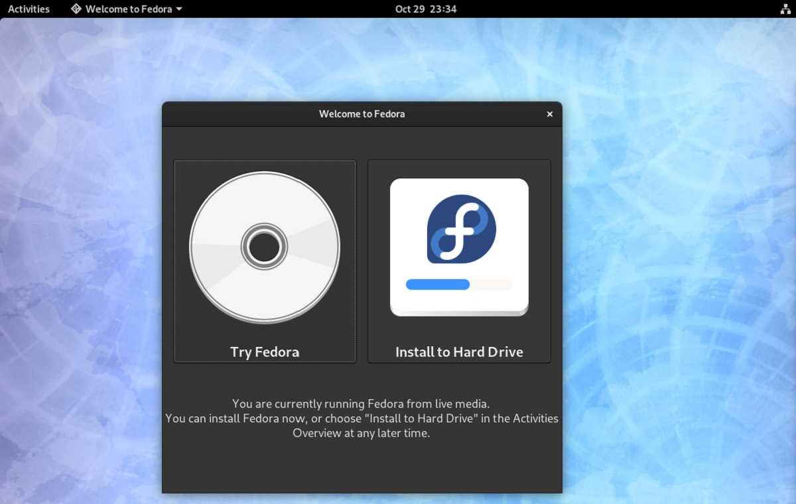
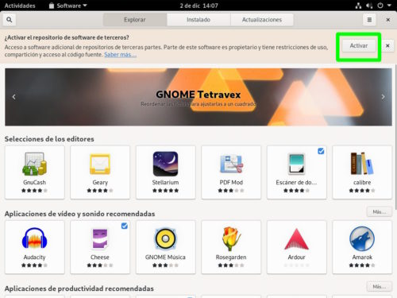
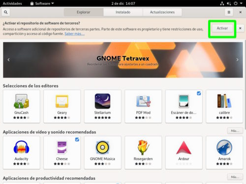

Fedora es una distribución Linux para propósitos generales basada en RPM, que se caracteriza por ser un sistema estable,la cual es mantenida gracias a una comunidad internacional de ingenieros, diseñadores gráficos y usuarios que informan de fallos y prueban nuevas tecnologías. Cuenta con el respaldo y la promoción de Red Hat
El proyecto no busca sólo incluir Software libre gratuitoy de código abierto, sino ser el líder en ese ámbito tecnológico. Algo que hay que destacar es que los desarrolladores de Fedora
prefieren hacer cambios en las fuentes originales en lugar de aplicar los parches específicos en su distribución, de esta forma se asegura que las actualizaciones estén disponibles para todas las variantes de GNU/Linux. Max Spevack en una entrevista
afirmó que: "Hablar de Fedora es hablar del rápido progreso del Software Libre y de Código Abierto." Durante sus primeras 6 versiones se llamó Fedora Core, debido a que solo incluía los paquetes más
importantes del sistema operativo. La última versión es Fedora 16, puesta a disposición del público el 8 de noviembre del 2011.
De acuerdo a Distrowatch, Fedora es la tercera distribución de GNU/Linux más popular, por detrás de Linux Mint y Ubuntu

El Proyecto Fedora se distribuye en muchas formas diferentes:
En las primeras 6 versiones había dos repositorios principales: El Fedora Core y el Fedora Extras. Fedora Core contenía todos los paquetes básicos que eran requeridos por el sistema operativo, así como otros que eran distribuidos con los CD o DVD de la instalación. Fedora Extras, el repositorio secundario que estaba incluido en Fedora Core 3 era mantenido por la comunidad y no estaba incluido en los discos de instalación. En ese entonces los repositorios eran:

| REPOSITORIO | DESCRIPCIÓN | |
|---|---|---|
| 1 | main | Contiene solamente los paquetes que cumplen los requisitos de la licencia de Ubuntu, y para los que hay soporte disponible por parte de su equipo. Éste está pensado para que incluya todo lo necesario para la mayoría de los sistemas Linux de uso general. Los paquetes de este componente poseen ayuda técnica garantizada y mejoras de seguridad oportunas. |
| 2 | restricted | Contiene paquetes soportados por los desarrolladores de Ubuntu debido a su importancia, pero que no está disponible bajo ningún tipo de licencia libre para incluir en main. En este lugar se incluyen los paquetes tales como los controladores propietarios de algunas tarjetas gráficas, como, por ejemplo, los de ATI y NVIDIA. El nivel de la ayuda es más limitado que para main, puesto que los desarrolladores pueden no tener acceso al código fuente. |
| 3 | universe | Contiene una amplia gama de programas, que pueden o no tener una licencia restringida, pero que no recibe apoyo por parte del equipo de Ubuntu sino por parte de la comunidad. Esto permite que los usuarios instalen toda clase de programas en el sistema guardándolos en un lugar aparte de los paquetes soportados: main y restricted. |
| 4 | multiverse | Contiene los paquetes sin soporte debido a que no cumplen los requisitos de software libre. |

SELinux ("Security-Enhanced Linux") se destaca entre las características de seguridad de Fedora, pues implementa una gran variedad de políticas de seguridad, incluyendo control de acceso obligatorio (MAC "Mandatory Access Control"), a través de los Módulos de Seguridad de Linux que están en el núcleo Linuxdel sistema.
La distribución está liderando las distribuciones que incorporan SELinux, habiéndolo introducido en Fedora Core 2. Sin embargo lo desactivó como elemento predeterminado, pues alteraba radicalmente la forma en que el sistema operativo funcionaba. Posteriormente fue activado por defecto en Fedora Core 3 introduciendo una política menos estricta. Fedora también tiene métodos propios para prevenir la sobrecarga del buffer y la utilización de rootkits. La verificación del buffer en tiempo de compilación, «Exec Shield»y restricciones en como la memoria del núcleo en /dev/mem puede ser accedida ayudan a prevenir esto.



 


| Tabla comparativa entre software libre y software propietario | |||
|---|---|---|---|
| N° | Software propietario | Software libre | |
| Características | |||
| 1 | Generalmente son menos seguras | Software de Código abierto | |
| 2 | Suelen tener un costo mayor | Software de Licencia Gratuita | |
| 3 | El Usuario depende del creador del Software | Acceso a Programas Libres | |
| Ventajas | |||
| 1 | Soporte para todo tipo de Hardware | Es económico | |
| 2 | Mejor acabado en aplicaciones | Libertad de uso y distribución | |
| 3 | Mayor mercado laboral | Independencia tecnológica | |
| Desventajas | |||
| 1 | No existen aplicaciones para todas las plataformas | No son para todas las plataformas | |
| 2 | Imposibilidad de copia | Imposibles de copiar | |
| 3 | Imposibilidad de modificación | No se puede modificar | |
| Ejemplos | |||
|
Clic sobre la imagen para más info. sobre Windows |
Clic sobre la imagen para más info. sobre Linux |
||
| Bibliografía | Observaciones | ||
| Software-libre-vs-Software-propietario | 1 | Software-libre-vs-Software-propietario | |
| Ventajas y Desventajas | 2 | Ventajas y Desventajas | |
| Ventajas-Desventajas | 3 | Ventajas-Desventajas | |
| Glosario | |||
|---|---|---|---|
|
|
|||
|
|
|||
|
|
|||
|
|
|||
|
|
|||
|
|
|||
|
|
|||
|
|
|||
|
|
|||
|
|
|||
{kind=link}
{kind=link}